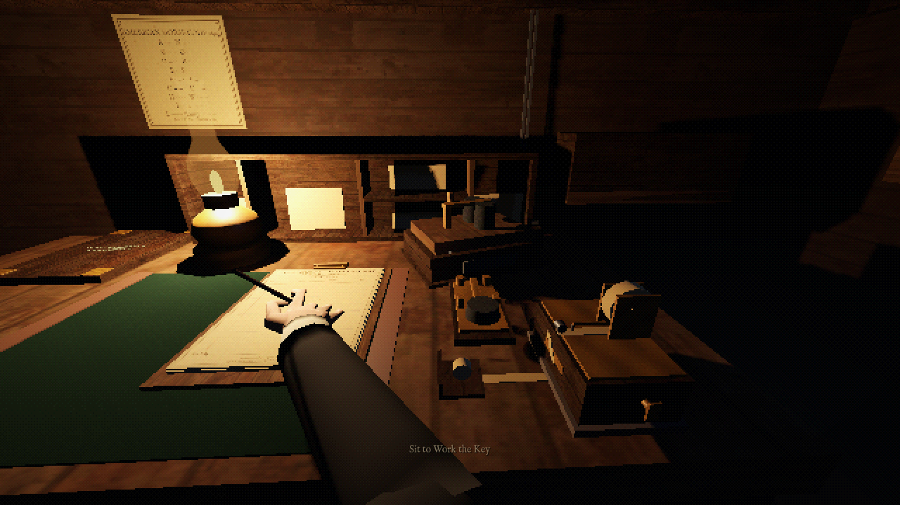
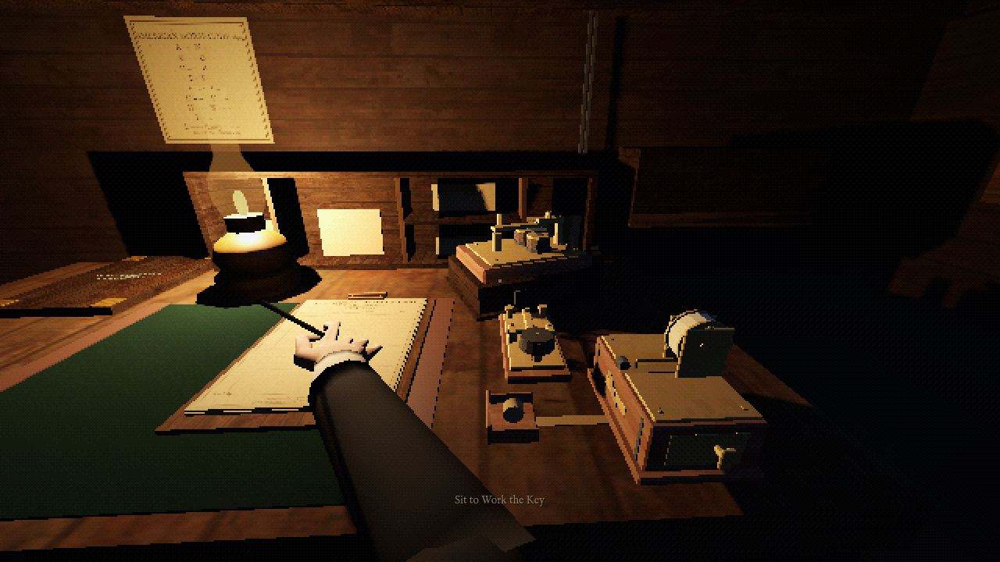
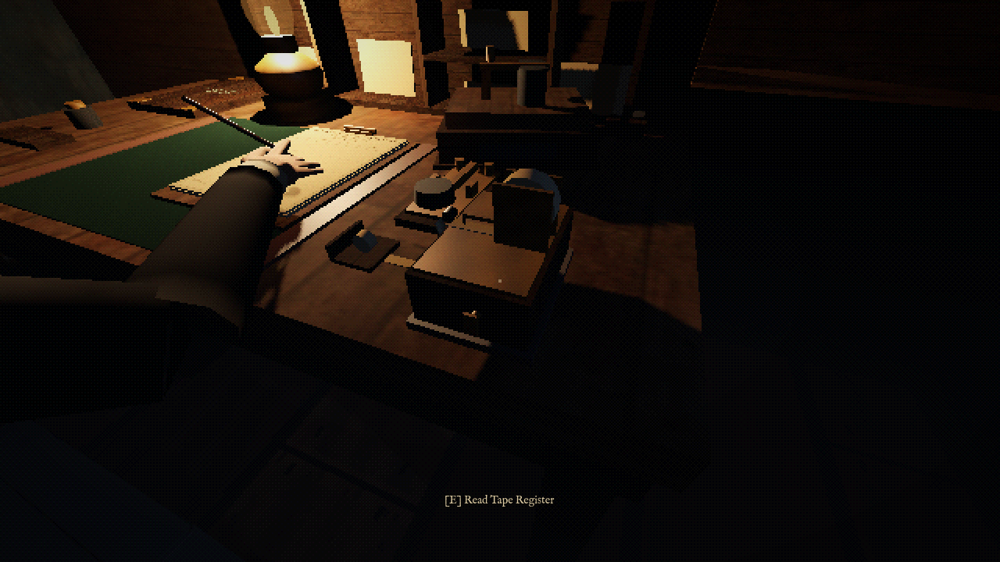
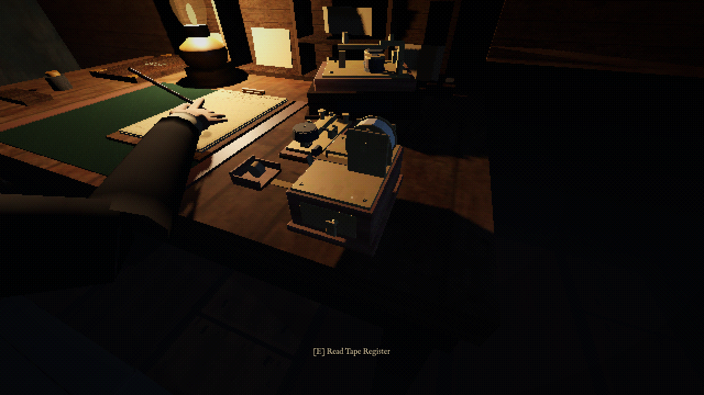
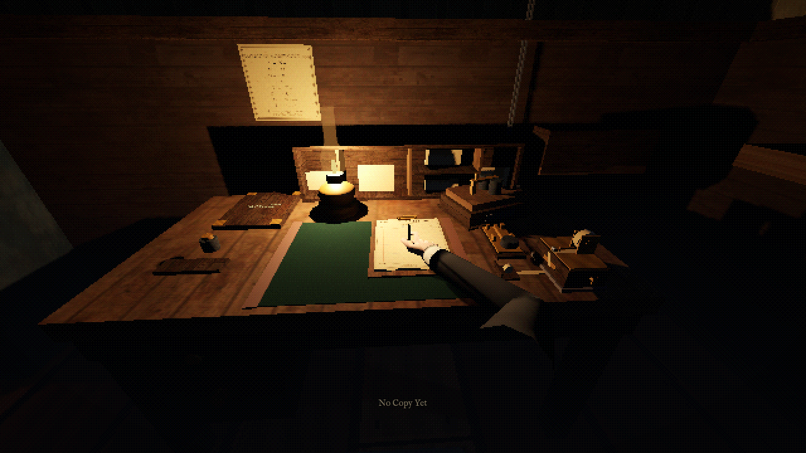
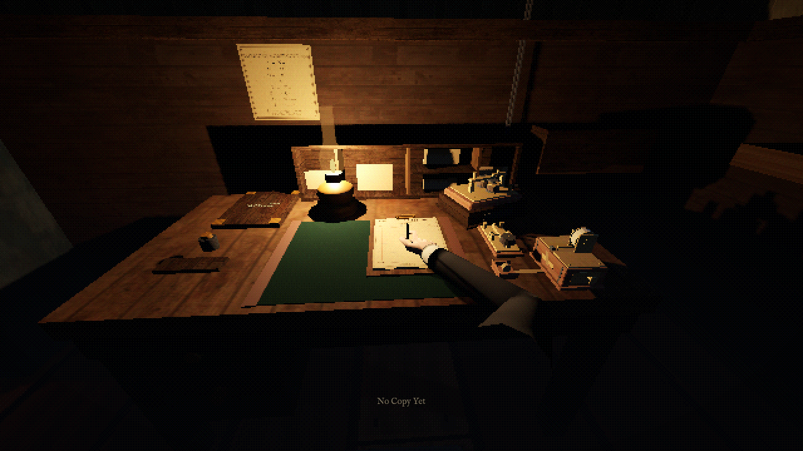

Blender-authored key, sounder and tape-register assemblies. 3,332 triangles in seven separately movable meshes; shared 256px atlas. Existing signal, interaction and writing contracts retained.
Owner visual review pending. These are real Godot window captures. The image-analysis service failed; no claim of artistic approval, historical exactness, human playtest or improved emotion is made. The motion clip is a fixed-camera instrument test, encoded at 30fps without audio—not real-time gameplay pacing.






90 rendered frames: three key presses, six sounder MARKs; existing register rotation. Paper content and scheduler unchanged.
Latest saved regression: 46 suites / 2,094 assertions / 0 assertion failures. Earlier intro-fade failure and shift-director crash remain unexplained; later green does not establish stability. Existing shutdown resources/Texture RID leaks persist. Production input/physics route: 0 failures, 6 captures, no teleports.
Design and gameplay experiment plan · Regression evidence · Production route log · Editable Blender source